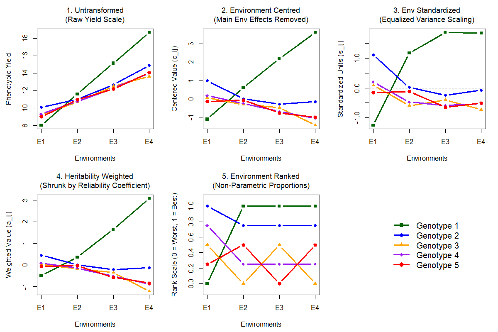

Module 2
GxE Data Transformation Engine

Implementing structural data transformations allows us to isolate interaction components from raw multi-environment trial (MET) data:
- 1. Untransformed Baseline raw data model capturing all phenotypic yield.
- 2. Environment Centred Removes the main environmental effect (mean = 0) to observe pure deviation.
- 3. Environment Standardized Scales by within-environment phenotypic variance to equalise heterogeneous trial quality.
- 4. Heritability Weighted Shrunk by reliability coefficient. Scales by the square root of line-mean heritability.
- 5. Environment Ranked Non-parametric proportions. Proportional mapping of ranks between 0 (worst) and 1 (best).